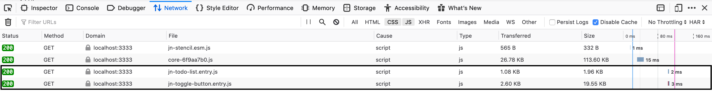

<h2><a href="https://stenciljs.com/blog/how-lazy-loading-web-components-work">Lazy Loading</a></h2>



<aside class="notes">
  To help performance and bundle size, web components built with StencilJS are lazy-loaded.
  That is, Stencil creates multiple JS chunks for each component that are asynchronously fetched by the client
  to render each component when the browser needs them. This defers the amount of code the browser
  needs to fetch and execute up front, producing faster load times. I’ll cover lazy-loading in more
  detail during the demo.
</aside>